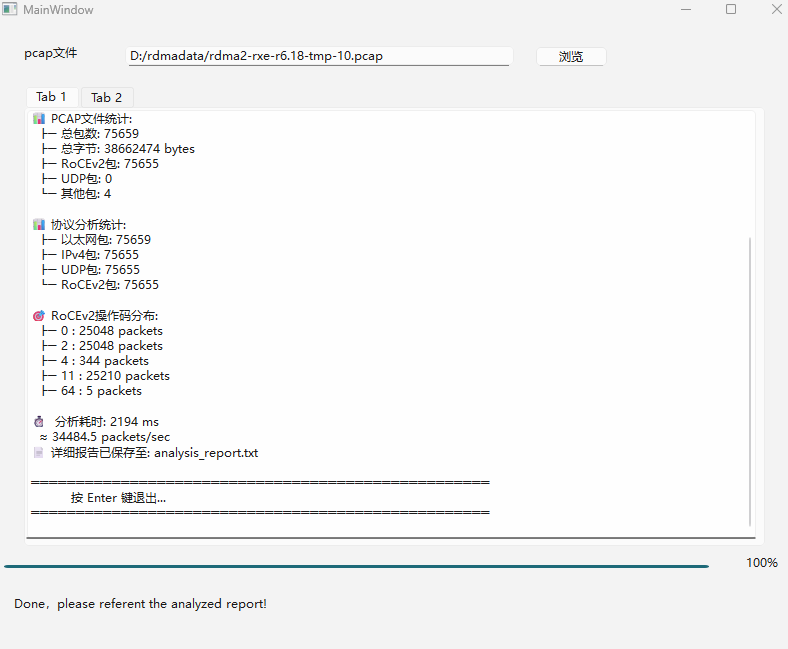
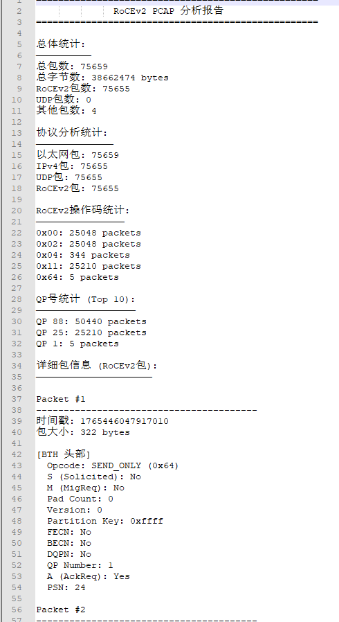

⚡ 生产流量实测 · 2026.02
RoCEv2 分析器
代号「小金鱼」 · 7.5万包 / 2.2秒 · 零拷贝架构
📁 PCAP文件：rdma2-rxe-r6.18-tmp-10.pcap
✅ RoCEv2 占比 99.99%
总包数
75,659
总字节
38.66
MB
RoCEv2 包
75,655
分析耗时
2,194
ms
≈ 34,484 包/秒
📊 RoCEv2 操作码分布
0x00 (SEND_FIRST)
25,048
0x02 (SEND_LAST)
25,048
0x04 (SEND_ONLY)
344
0x11 (RDMA_READ_RESP_FIRST)
25,210
0x64 (厂商扩展)
5
🔍 检测到 QP 88 与 QP 25 双向对称流，PSN 连续无跳号 —— 这是真实生产负载的特征。
🎯 为什么是小金鱼
不卡
—— 零拷贝架构，10GB 文件 < 5 秒出报告
不藏
—— 直接告诉你哪个 QP 在乱序、哪个流在重传
不贵
—— Wireshark 是手术刀，小金鱼是体检中心
📄
查看完整分析报告 (analysis_report.txt)
· 🐙
GitHub 仓库
·
✉️ 内测申请：
申请内测 →
⚡ 处理速度：3.45万包/秒 · Wireshark 同文件约 90秒+ · 适合存储厂商、网卡验证、超算中心场景
工具截图

